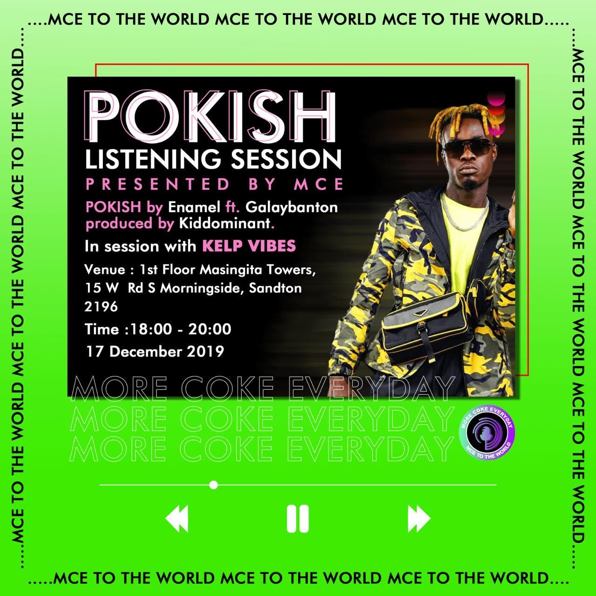

My project management adventure began in the bustling world of event
planning and entertainment. It all kicked off during high school when I
discovered my passion for events as a promoter. I was the go-to person for
marketing and selling tickets, and let’s just say, I took that role
seriously—seriously enough to throw an unforgettable Matric Dance
after-party in 2015 that was a hit!
Fueled by that success, I took the plunge in 2016 and founded my own PR
and Events company. My big break came when an events company I had
previously promoted for asked me to help make one of their artist’s songs
trend on Twitter. Spoiler alert: we nailed it. Since then, I’ve been busy
orchestrating everything from high-energy musical events with 500+
attendees to cozy speed dating nights with 50. I’ve also managed music and
album launches, and product unveilings for various clients.
My company’s reputation for smooth execution led to collaborations with
big names like Varinity for the Flexecution event hosting 5000+ people and
OGD Entertainment for the ASE Awards. We’ve even been the
behind-the-scenes team for Raplyf, handling everything from office admin
to on-the-day technicalities for their events Umshubelo(with more than 18
000 attendees) and 3 day Spring Break.
In summary, whether it’s managing a crowd of thousands or a more intimate
gathering, my project management skills are honed and ready to turn any
event into a standout success. And yes, I’ve learned to keep the fun in
functionality and the creativity in coordination!
For a deeper dive into my event management endeavors, check out the
Events Management
page, and if you’re curious about how I’ve applied my project management
skills to give back to the community, you can find more on the
Volunteering page.